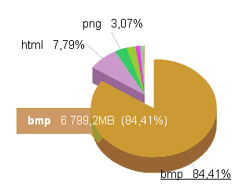

ブログでのbmp画像は容量を食いすぎ
ブログで使う画像形式についてですが、最初の頃は表示さえされればどれでもいいやと思っていたので、あまり気にせずにbmp形式の画像を多用しておりました。
でも、途中からbmp画像では容量を食いすぎることに気づき、最近では主にpngを利用するようにしております。
けれども、アクセス解析をのぞいてみると、初期の頃にたくさん使っていたbmp画像の影響で、転送量の大部分をbmpが占めているようなんです。
当ドメインの先月の転送量の割合でいうと、bmp画像だけで84.41%を占めており、html転送量の10倍以上の6GB以上を消費しているらしいのです。

当サイトのレンタルサーバーは転送量無制限なので、これでもぜんぜん問題はないのですが、格安サーバーによっては、月の転送量が3GBを超えると表示されなくなるところもあります。
また、表示速度を軽くするという意味でも、やはり、できるだけ画像の容量は少なくした方がいいと思うのです。
そんな意味で、ブログの初期の頃に使用していたbmp画像を、pngやjpg、あるいはgif形式に変換しなおし、転送量を軽減しようと考えております。
ただ、実際に変換する場合、画像の部分はツールで一括変換することも可能ですが、それに伴ってhtmlのリンク関係にも手を加えないとリンク切れになってしまうので、膨大な量となってしまいます。
そんなわけで、考えているだけでまだ実行はしていないのですが、そもそものところ、bmp画像を使っていたことが間違っていたようです。
そんな意味でも、ブログ上で画像を使用する際には、bmpは避けて、jpgやpng、もしくはgifなどで保存することをおすすめします。
個人的に、写真画像を利用する際はjpgを、イラストやキャプチャーを利用する際はpngを、動きのあるアニメーションを利用する際にはgifを使うようにしています。
それぞれの形式でファイルの容量や画質などにメリット、デメリットがあるようで、人それぞれのようですが、いずれにしても、bmp画像は使わないようにした方がいいみたいですね。
特に、アクセスが集中しているページの画像だけでも容量を軽いものにすれば、総合的な転送量もかなり減少するはずですので、アクセスの多いTOP10ぐらいまではチェックされることをおすすめします。